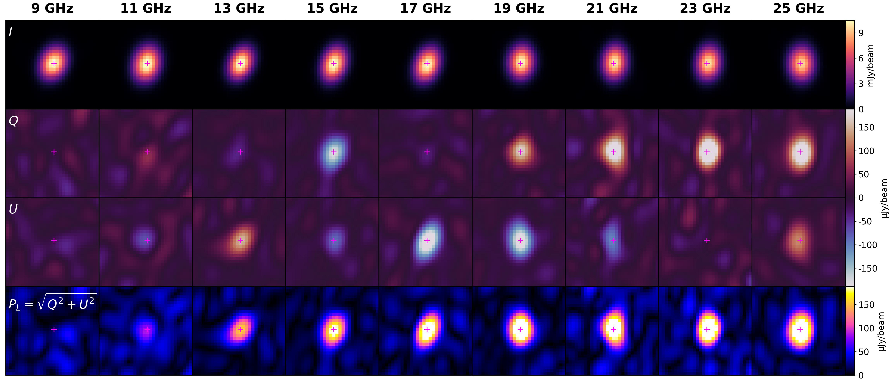
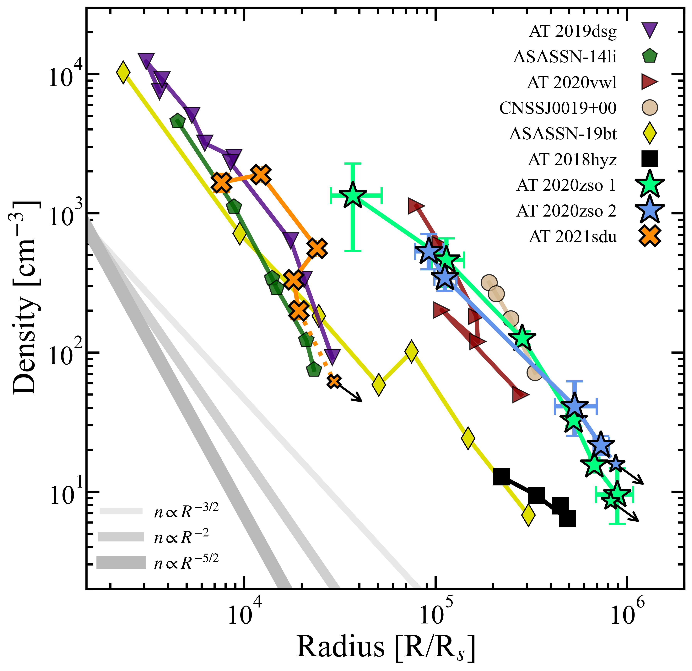
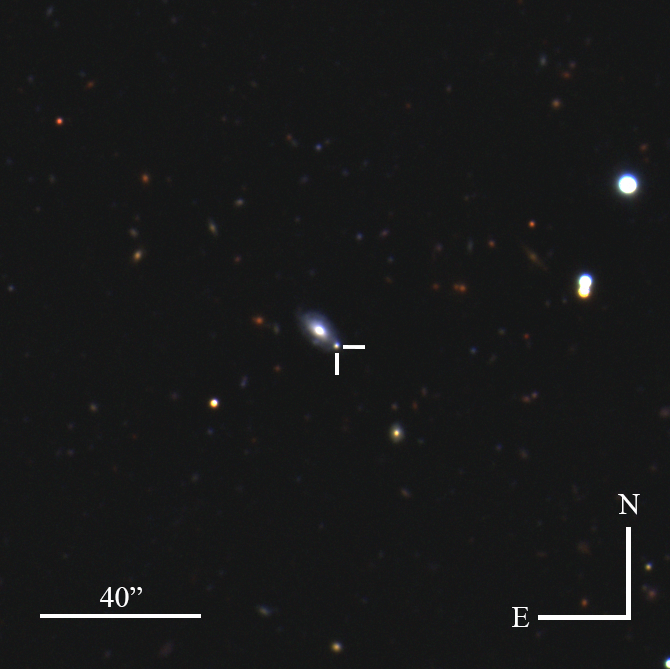
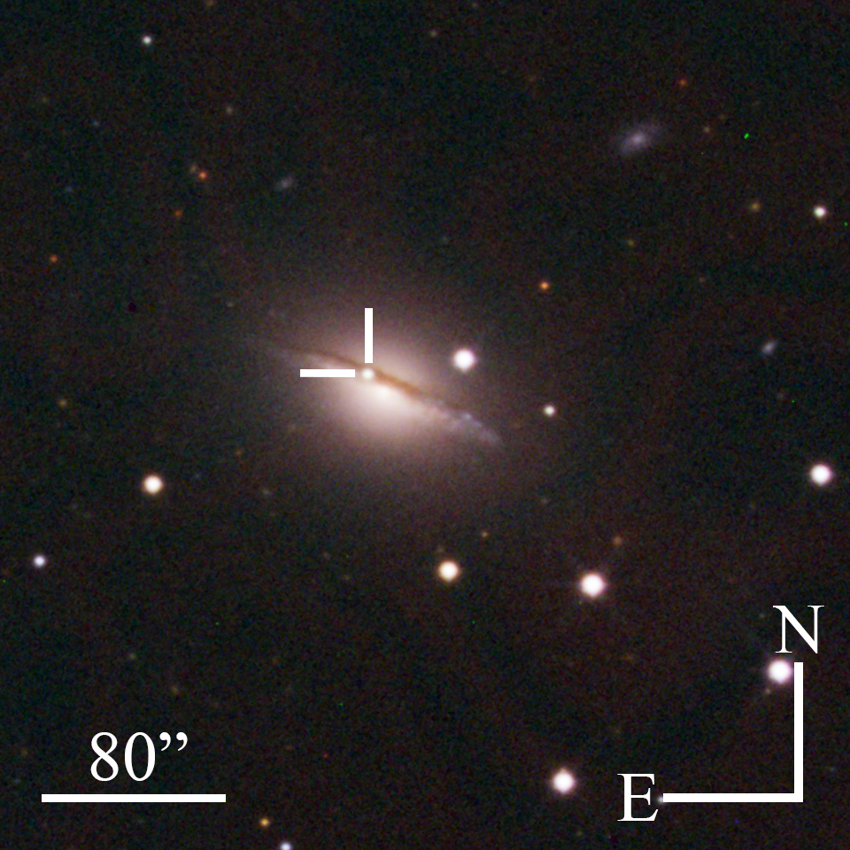
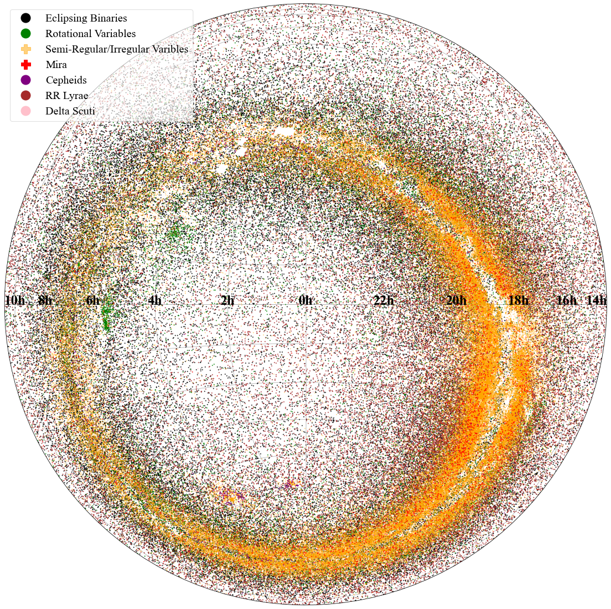

⬡ Research Areas
Radio Astronomy
Utilizing radio telescopes to study cosmic phenomena across the electromagnetic spectrum.

Tidal Disruption Events
Characterizing accretion-powered emission and relativistic outflows as stars are disrupted by supermassive black holes.

Gamma-Ray Bursts
Mapping afterglow light curves and jet breaking physics for short- and long-duration GRBs.

Engine-Driven Supernovae
Investigating deep-engine signatures in unusual supernovae and their late-time radio/X-ray behavior.

Variable Stars
Studying stellar variability and its implications for stellar physics and galactic evolution.

Methods & Instrumentation
- Broadband data analysis across radio, millimeter, and X-ray bands
- Hydrodynamic modeling of jet and shock evolution
- Collaborative campaigns with observatories and survey teams